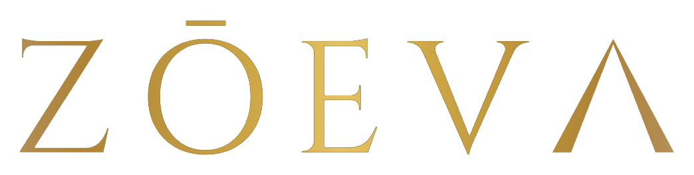

Recovery Guide

Recovery Eye Mask
Aging is a design variable.
01 — Science
現代の寝室は、完全な暗闇ではありません。街灯、電子機器のインジケーター、早朝の光——これらすべてが、あなたの概日リズムに干渉し続けています。
ZŌEVΛアイマスクは「完全遮光」と「深圧刺激（DPS）」を組み合わせることで、副交感神経を優位にし、入眠を科学的に加速します。
"The circadian rhythm governs insulin sensitivity, immune function, and cardiovascular recovery. Disrupting it with light has systemic consequences."
02 — Protocol
アイマスクは就寝30分前からの装着を推奨します。グラスと組み合わせることで、より深い回復が得られます。
03 — How to Use
04 — Specifications
05 — Results
06 — Caution
Next Step
グラスと組み合わせる
Blue Light Recovery Glass Guide →